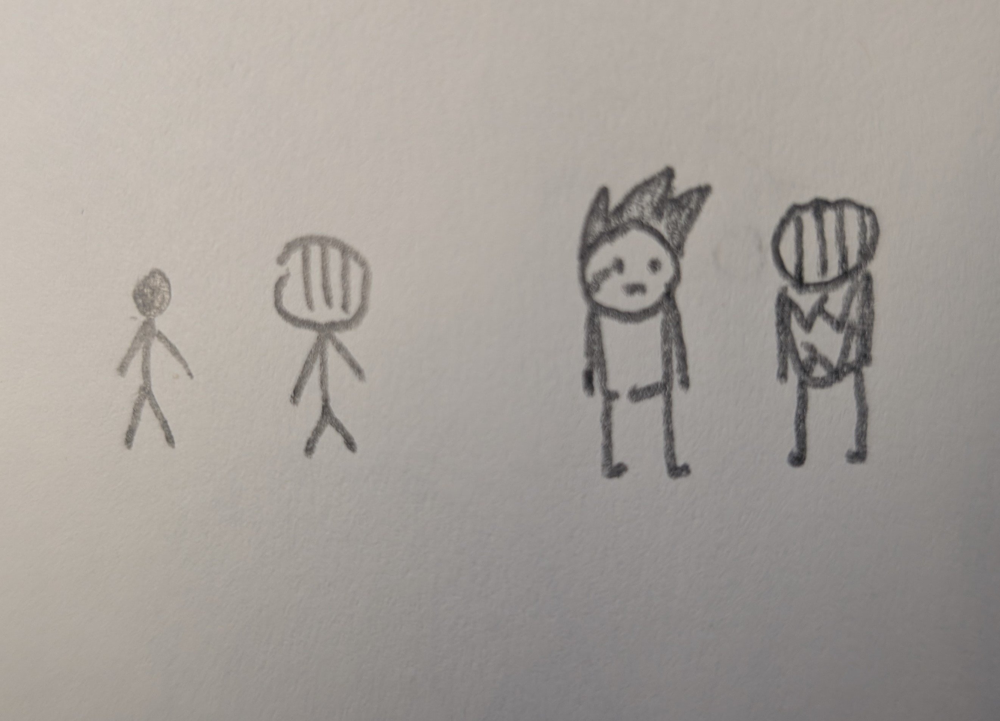
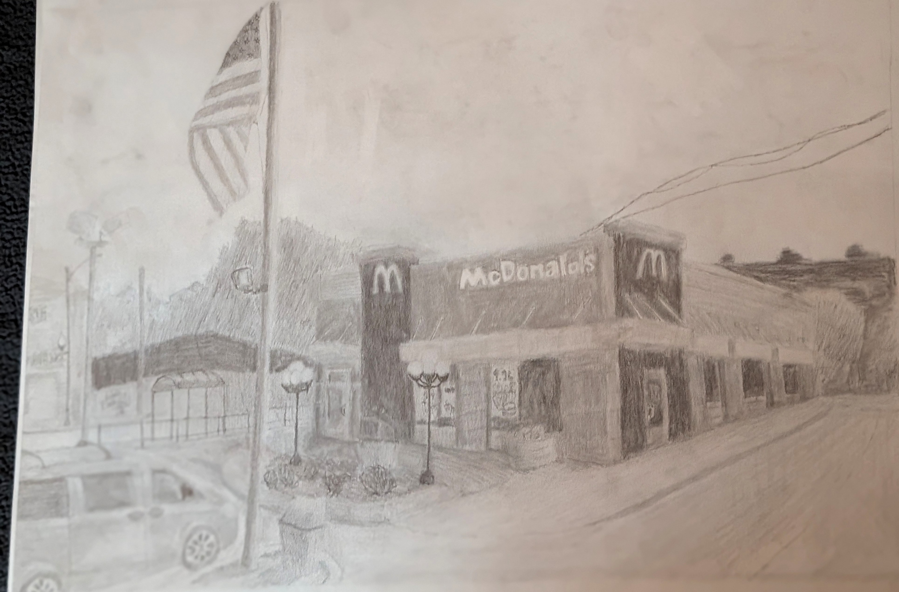

Home Page
Rama Herbst
Creator of the miscellaneous
I was six years old when I made my first comic book. Titled, "Man and Knight", the story was terrible. Man and Knight's plot was nonexistent, character designs were crude and hastily thrown together, panel and text quality was all over the place, and the whole thing looked as though it had been made by an elementary school child. Thankfully, there was no one around to tell me any of this, so my childhood enjoyment of art and storytelling never faded away.
My rendition of Man and Knight:

What's next for me?
Most recently I have been focusing on expanding my drawing and game development skills in preparation for my major, Game Design & Experiential Media. At the moment, the processes I'm most focused on are gesture drawing for character design, and basic movement mechanics. The last project I completed was an 18" x 24" pencil drawing of the McDonald's just outside of Mies Campus.

What inspires me?
As a child I spent a lot of time reading various comics and graphic novels, anything my mother would bring home from the library. Over the years the stories I've gained the most from have often been dark, grungy, fantasy or science fiction series, such as BLAME! and Dorohedoro.
Interview of BLAME! Author, Tsutomu Nihei